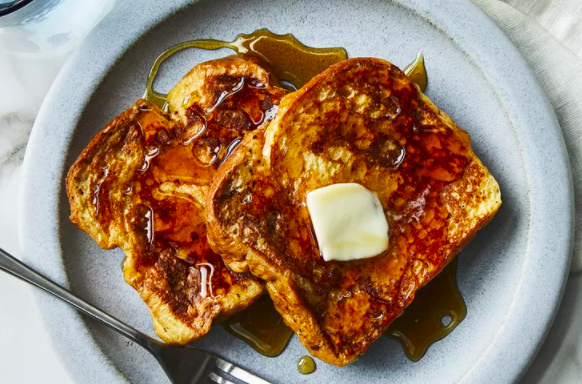

French Toast Recipe

Description
It's easier than you think to make restaurant-quality French toast in the comfort of your own kitchen – you just need a skillet, a few staple ingredients, and a good recipe. That's where we come in!
Ingredients
- Eggs
- Bread
- Milk
- Salt
- Vanilla
- Cinnamon
- Butter
Steps
- Gather all ingredients.
- Whisk milk, eggs, vanilla, cinnamon, and salt together in a shallow bowl.
- Lightly butter a griddle or skillet and heat over medium-high heat.
- Dunk bread in the egg mixture, soaking both sides.
- Transfer to the hot skillet and cook until golden, 3 to 4 minutes per side. Serve hot.
Source
Back to recipes
Back to top